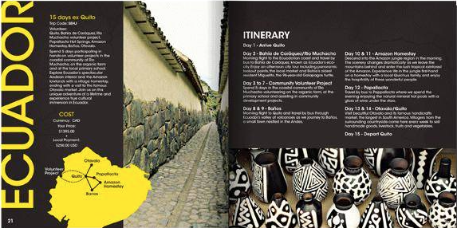

I choose this website because of it helped me design my project 2 website and its navigation was easy to follow. When you first enter the website the top half of the screen is animated by having different affect to get the viewer engaged. This website is meant to inform and teach you and it does a good job laying out the information. Though the site does not have a lot of illustrations you still can see a different form of visual entertainment.
Learning how to use the different slideshow effects would help me with this project along with the future. I love the fact that website is sub sectioned depending on the area you want to focus on. The website is perfect for people who are interested in learning different coding as well as how to make their websites come to life. After logging in to this site I realize how important it is to grasp the viewers attention. They did an amazing job with this site.
